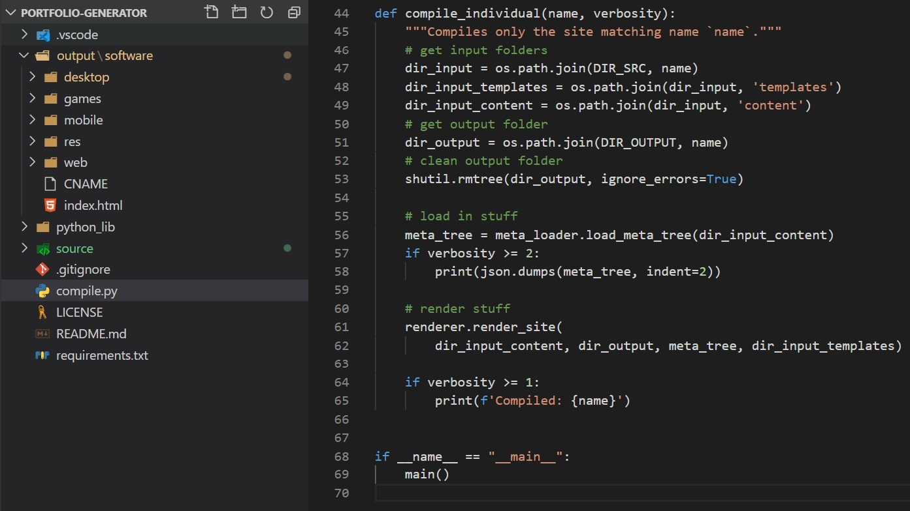

Portfolio Generator
I got really tired of having to manually update my statically-hosted software portfolio, so I decided to be a real programmer and write a tool to automate it. Gone are the days of manually adding redundant HTML, customizing it for new projects, and then getting frustrated when I want to reorder things or change a similar detail across multiple pages.
Instead, for any of my portfolio sites (including the one you're looking at now), a Python script reads meta files for each page or project, compiles them using Jinja2 templates, and copies over all other source files like images, JS, or CSS. The compiled HTML and copied files are neatly placed together, responsive CSS makes everything dynamically fit together well, and I can freely and efficiently share my work on a static host.